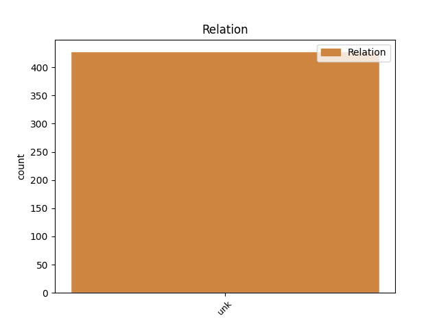
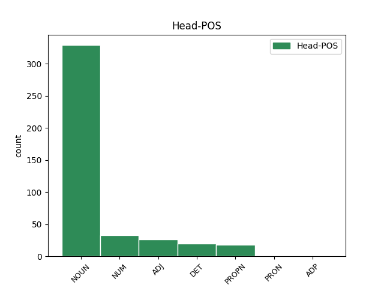
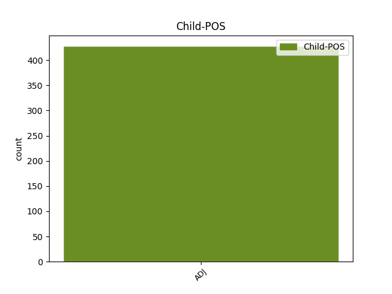

Distribution of features within this leaf



Agreement Rules sorted by frequency.
- When the dependent token is the unk(unk) of the head token, and the dependent token is ADJ.
1 Územní _ _ _ _ 0 _ _ _
2 rozdíly _ _ _ _ 0 _ _ _
3 v _ _ _ _ 0 _ _ _
4 úmrtnosti _ _ _ _ 0 _ _ _
5 na _ _ _ _ 0 _ _ _
6 zhoubné _ _ _ _ 0 _ _ _
7 novotvary _ _ _ _ 0 _ _ _
8 celkem _ _ _ _ 0 _ _ _
9 jsou _ _ _ _ 0 _ _ _
10 v _ _ _ _ 0 _ _ _
11 podstatě _ _ _ _ 0 _ _ _
12 totožné _ _ _ _ 0 _ _ _
13 s _ _ _ _ 0 _ _ _
14 územními _ _ _ _ 0 _ _ _
15 rozdíly _ _ _ _ 0 _ _ _
16 úmrtnosti _ _ _ _ 0 _ _ _
17 na _ _ _ _ 0 _ _ _
18 diagnózu _ _ _ _ 0 _ _ _
19 " _ _ _ _ 0 _ _ _
20 zhoubný _ _ _ _ 0 _ _ _
21 novotvar _ _ _ _ 0 _ _ _
22 průdušnice _ _ _ _ 0 _ _ _
23 , _ _ _ _ 0 _ _ _
24 průdušek _ _ _ _ 0 _ _ _
25 nebo _ _ _ _ 0 _ _ _
26 plic _ _ _ _ 0 _ _ _
27 " _ _ _ _ 0 _ _ _
28 ( _ _ _ _ 0 _ _ _
29 30 _ _ _ _ 0 _ _ _
30 % _ _ _ _ 0 _ _ _
31 z _ _ _ _ 0 _ _ _
32 úhrnu úhrn NOUN NNIS2-----A---- Animacy=Inan|Case=Gen|Gender=Masc|Number=Sing|Polarity=Pos 0 _ _ _
33 zemřelých zemřelý ADJ AAMP2----1A---- Animacy=Anim|Case=Gen|Degree=Pos|Gender=Masc|Number=Plur|Polarity=Pos 32 unk _ _
34 na _ _ _ _ 0 _ _ _
35 zhoubné _ _ _ _ 0 _ _ _
36 novotvary _ _ _ _ 0 _ _ _
37 ) _ _ _ _ 0 _ _ _
38 . _ _ _ _ 0 _ _ _
Disagree Examples:
1 Dobře _ _ _ _ 0 _ _ _
2 fungující fungující ADJ AGNP1-----A---- Aspect=Imp|Case=Nom|Gender=Neut|Number=Plur|Polarity=Pos|Tense=Pres|VerbForm=Part|Voice=Act 12 unk _ LDeriv=fungovat|SpaceAfter=No
3 , _ _ _ _ 0 _ _ _
4 která _ _ _ _ 0 _ _ _
5 jsou _ _ _ _ 0 _ _ _
6 motorem _ _ _ _ 0 _ _ _
7 k _ _ _ _ 0 _ _ _
8 prosperitě _ _ _ _ 0 _ _ _
9 firmy _ _ _ _ 0 _ _ _
10 , _ _ _ _ 0 _ _ _
11 jsou _ _ _ _ 0 _ _ _
12 výjimkou výjimka NOUN NNFS7-----A---- Case=Ins|Gender=Fem|Number=Sing|Polarity=Pos 0 _ _ _
13 . _ _ _ _ 0 _ _ _
1 A _ _ _ _ 0 _ _ _
2 je _ _ _ _ 0 _ _ _
3 snad _ _ _ _ 0 _ _ _
4 zbytečné _ _ _ _ 0 _ _ _
5 dodávat _ _ _ _ 0 _ _ _
6 , _ _ _ _ 0 _ _ _
7 jak _ _ _ _ 0 _ _ _
8 to _ _ _ _ 0 _ _ _
9 skončí _ _ _ _ 0 _ _ _
10 , _ _ _ _ 0 _ _ _
11 pokud _ _ _ _ 0 _ _ _
12 obrázkům _ _ _ _ 0 _ _ _
13 nerozumíte _ _ _ _ 0 _ _ _
14 alespoň _ _ _ _ 0 _ _ _
15 tolik _ _ _ _ 0 _ _ _
16 co co PRON PQ--4---------- Animacy=Inan|Case=Acc|PronType=Int,Rel 0 _ _ _
17 prodávající prodávající ADJ AGMS1-----A---- Animacy=Anim|Aspect=Imp|Case=Nom|Gender=Masc|Number=Sing|Polarity=Pos|Tense=Pres|VerbForm=Part|Voice=Act 16 unk _ LDeriv=prodat|SpaceAfter=No
18 , _ _ _ _ 0 _ _ _
19 respektive _ _ _ _ 0 _ _ _
20 kupující _ _ _ _ 0 _ _ _
21 . _ _ _ _ 0 _ _ _
1 Protože _ _ _ _ 0 _ _ _
2 podnikatelé _ _ _ _ 0 _ _ _
3 mají _ _ _ _ 0 _ _ _
4 obdobných _ _ _ _ 0 _ _ _
5 návrhů _ _ _ _ 0 _ _ _
6 a _ _ _ _ 0 _ _ _
7 připomínek _ _ _ _ 0 _ _ _
8 více _ _ _ _ 0 _ _ _
9 , _ _ _ _ 0 _ _ _
10 zabývalo _ _ _ _ 0 _ _ _
11 se _ _ _ _ 0 _ _ _
12 jimi _ _ _ _ 0 _ _ _
13 na _ _ _ _ 0 _ _ _
14 sklonku sklonek NOUN NNIS6-----A---- Animacy=Inan|Case=Loc|Gender=Masc|Number=Sing|Polarity=Pos 0 _ _ _
15 minulého minulý ADJ AAIS2----1A---- Animacy=Inan|Case=Gen|Degree=Pos|Gender=Masc|Number=Sing|Polarity=Pos 14 unk _ _
16 a _ _ _ _ 0 _ _ _
17 počátkem _ _ _ _ 0 _ _ _
18 tohoto _ _ _ _ 0 _ _ _
19 roku _ _ _ _ 0 _ _ _
20 Sdružení _ _ _ _ 0 _ _ _
21 podnikatelů _ _ _ _ 0 _ _ _
22 ČR _ _ _ _ 0 _ _ _
23 . _ _ _ _ 0 _ _ _
1 Čím _ _ _ _ 0 _ _ _
2 větší velký ADJ AAFS1----2A---- Case=Nom|Degree=Cmp|Gender=Fem|Number=Sing|Polarity=Pos 5 unk _ _
3 odchylka _ _ _ _ 0 _ _ _
4 , _ _ _ _ 0 _ _ _
5 tím ten DET PDZS7---------- Case=Ins|Gender=Masc,Neut|Number=Sing|PronType=Dem 0 _ _ _
6 víc _ _ _ _ 0 _ _ _
7 čeká _ _ _ _ 0 _ _ _
8 firmu _ _ _ _ 0 _ _ _
9 práce _ _ _ _ 0 _ _ _
10 navíc _ _ _ _ 0 _ _ _
11 , _ _ _ _ 0 _ _ _
12 protože _ _ _ _ 0 _ _ _
13 je _ _ _ _ 0 _ _ _
14 třeba _ _ _ _ 0 _ _ _
15 výpadek _ _ _ _ 0 _ _ _
16 kompenzovat _ _ _ _ 0 _ _ _
17 jiným _ _ _ _ 0 _ _ _
18 zbožím _ _ _ _ 0 _ _ _
19 . _ _ _ _ 0 _ _ _
1 Krátce _ _ _ _ 0 _ _ _
2 řečeno _ _ _ _ 0 _ _ _
3 , _ _ _ _ 0 _ _ _
4 tvrdí _ _ _ _ 0 _ _ _
5 - _ _ _ _ 0 _ _ _
6 li _ _ _ _ 0 _ _ _
7 někdo _ _ _ _ 0 _ _ _
8 , _ _ _ _ 0 _ _ _
9 že _ _ _ _ 0 _ _ _
10 jeho _ _ _ _ 0 _ _ _
11 zboží _ _ _ _ 0 _ _ _
12 je _ _ _ _ 0 _ _ _
13 nejlepší _ _ _ _ 0 _ _ _
14 a _ _ _ _ 0 _ _ _
15 nejlevnější _ _ _ _ 0 _ _ _
16 , _ _ _ _ 0 _ _ _
17 pak _ _ _ _ 0 _ _ _
18 zároveň _ _ _ _ 0 _ _ _
19 tvrdí _ _ _ _ 0 _ _ _
20 , _ _ _ _ 0 _ _ _
21 že _ _ _ _ 0 _ _ _
22 zboží zboží NOUN NNNS1-----A---- Case=Nom|Gender=Neut|Number=Sing|Polarity=Pos 0 _ _ _
23 ostatních ostatní ADJ AAMP2----1A---- Animacy=Anim|Case=Gen|Degree=Pos|Gender=Masc|Number=Plur|Polarity=Pos 22 unk _ _
24 je _ _ _ _ 0 _ _ _
25 horší _ _ _ _ 0 _ _ _
26 a _ _ _ _ 0 _ _ _
27 drahé _ _ _ _ 0 _ _ _
28 . _ _ _ _ 0 _ _ _